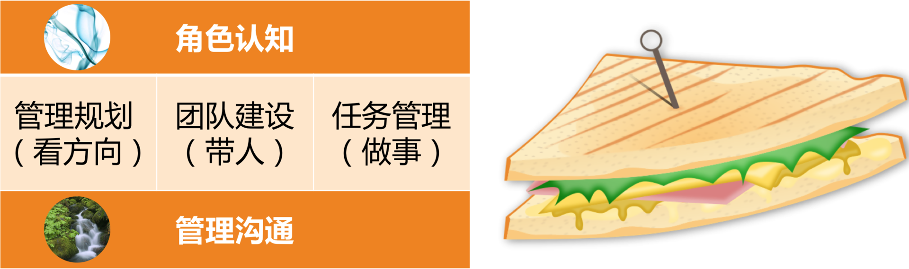

- 00 开篇词 你为什么需要学管理？.md.html
- 01 多年前的那些工程师都去哪了？.md.html
- 02 我要不要做管理呢？内心好纠结！.md.html
- 03 哪些人比较容易走上管理岗位？.md.html
- 04 我要不要转回去做技术呢？.md.html
- 05 作为技术管理者，我如何保持技术判断力？.md.html
- 06 我这样的风格能做管理吗？.md.html
- 07 我能做好管理吗，大家服我吗？.md.html
- 08 管理到底都做哪些事儿？.md.html
- 09 从工程师到管理者，角色都发生了哪些变化？.md.html
- 10 新经理常踩的坑儿有哪些？.md.html
- 11 我刚开始带团队，从哪里着手呢？.md.html
- 12 如何界定我团队是干什么的呢？.md.html
- 13 如何为团队设定合理的目标呢？.md.html
- 14 如何来规划团队的组织结构呢？.md.html
- 15 我都要申请哪些资源呢？.md.html
- 16 团队建设该从哪里入手？.md.html
- 17 如何提升员工的个人能力？.md.html
- 18 如何提升员工的工作意愿和积极性？.md.html
- 19 如何兼顾团队分工的稳定性和灵活性？.md.html
- 20 有什么方法可以有效提升团队凝聚力吗？.md.html
- 21 如何物色和培养核心人才？.md.html
- 22 如何建设团队文化，营造团队氛围？.md.html
- 23 如何和低绩效员工谈绩效？.md.html
- 24 如何让团建活动不再“收效甚微”？.md.html
- 25 多任务并行该如何应对？.md.html
- 26 如何确保项目的有效执行？.md.html
- 27 如何让流程机制得到有效的执行？.md.html
- 28 管理沟通那些事儿.md.html
- 29 沟通经常鸡同鸭讲，说不到一块怎么办？.md.html
- 30 如何掌控自己的情绪，以及如何管理情绪化的员工？.md.html
- 31 我各方面做得都很好，就是做不好向上沟通.md.html
- 32 横向沟通和非职权影响力.md.html
- 33 向下沟通的常见实例解析.md.html
- 34 管理沟通上有哪些常见的坑儿呢？.md.html
- 35 从空降谈管理方法论的积累.md.html
- 36 走出自己的管理之路.md.html
- 捐赠
28 管理沟通那些事儿
截至目前，我们已经探讨了“管理三明治”五部分内容中的前四部分：角色认知、管理规划、团队建设和任务管理。接下来，我们进入第五个部分的探讨，也就是无处不在的管理沟通。
如果说角色认知是管理工作的前提，就像空气一样弥漫在管理者所有的言行举止之中的话，那么管理沟通就恰似管理工作的载体，它就像水一样承载着所有管理工作的正常开展，离开了沟通，所有的工作都将搁浅而无法前行。它是如此重要，以至于我们要花 7 篇文章来探讨。
今天是第一篇，我们先一起来看看，技术管理者在管理沟通中可以遵循的框架。

“管理三明治”（果见）
管理沟通是个大话题，也是很多公司培训课的重头戏，相信你也参加过不少 HR 组织的管理沟通课，你感觉怎么样？在管理沟通问题上是否胸有丘壑、游刃有余了呢？
我预计答案并不乐观，因为我对超过 500 位技术管理者进行过统计，列出 12 个最常见的管理话题请他们选出自己认为最有挑战的选项，霸占前三位的总是这样三个话题：向上沟通、员工激励和团队凝聚力提升，其中向上沟通几乎是每次调研的榜首。而且，紧随这前三甲之后的，往往就是向下沟通。如果把向上沟通和向下沟通加起来，在不包括横向沟通的情况下，就已经一骑绝尘地把其他话题抛在身后了，可见管理沟通是技术管理者心中当之无愧的“最具挑战管理主题 NO.1”。
那么，为什么技术管理者们认为管理沟通是如此地挑战？尤其对于向上沟通会如此地头疼呢？
好，我先请你看看下面的四项工作有什么特点：
技术开发工作：使用电脑、学习语言、设计算法、开发功能、遵循规范……
项目管理工作：明确需求、制定计划、把控流程、推动执行、通报进展……
和下级合作：分配任务、跟进进展、辅导帮助、激发动力、评价结果……
和上级合作：领取任务、领会意图、提供建议、申请资源、寻求指导……
你有看出上面这四项工作在工作对象上的差异吗？下面我们一起按顺序来看看，它们打交道的对象发生了哪些变化：
第一，技术开发工作，主要和客观事物、自然规律打交道。客观事物和自然规律的特点就是确定性、精确性和稳定性。也正是对这些特性的掌握程度，才能体现出我们对于客观世界的认知水平。对于这些客观的、稳定的特性和规律，我们的信念是认识它、掌握它、遵循它和利用它。所以，精确、严谨、稳定，以及按照规则办事、讲逻辑而非情感和感受，是技术人的基本哲学。而且，越是优秀和出色的技术人，这些特质就越是明显。
不过，接下来“悲剧”就发生了，因为这些优秀和出色的技术人，同时也是上级提拔管理人才的重要人选。而相对于稳定、客观的技术来说，人是非常不稳定的因素。我们赖以成功的最拿手的改造这个世界的方式和手段，在应对人的时候却很可能变得狼狈不堪。
第二，项目管理工作。虽然项目管理不可避免地要跟各个角色的人打交道，但这项工作无论是目标，还是过程，核心都是做事，都是基于规则和规范的。换句话说，还是可以照规矩办事的。技术人从编程语言和技术框架的规则，转换为项目管理的流程和规范，对于价值观的挑战还不是颠覆式的，精确性、规范性、确定性依然可以很好地发挥价值。
虽然要不断地开会、沟通，不得不和人打交道，但是依然是在一个有规则的大框架下工作，“感觉还好”。正因为如此，项目管理是很多技术管理者的拿手好戏。在我统计过的 500 多名技术管理者中，“项目执行和交付”这个主题，都是毫无悬念地排在“技术管理者最擅长的管理主题”的榜首，而且大幅度超过其他主题。我想，这绝非偶然。
第三，和下级合作。如果说项目管理还可以大幅度地依赖规则和规范来搞定的话，那么和下级的合作和沟通就变成了完全和人打交道了。人大概是这个世界上最不稳定的“因素”了，自然性、社会性、情感性交织在一起，再加上无时无刻的相互影响和波动，就别指望有什么流程和规则是可以用于和很多人的相处了，即便是和某个确定的人相处，都很难摸到规律，冲突和矛盾不断。不信的话，你看看网上有多少情感专家、教育专家就知道了。
而做了管理者，要和一群人相处，如果说安排他们做事还有些规矩可以用的话，那么员工激励就很难用规范和规则来实现了。因为，我们在第 27 篇文章中已经提到过，流程和机制是用来保障工作的“下限”的，而激励是激发团队工作“上限”的，所以，员工激励作为很“艺术”的一个管理主题，被众多的技术管理者列在了“最具挑战管理主题”的前三。我想，这一样绝非偶然。
第四，和上级合作。从规则感和掌控感而言，和下级合作至少有一个因素可以利用，即你的职位和角色带来的职权。从权力角度讲，因为下级向你汇报，你对他们的工作有分配、知情、评价的权力，你可以主导团队的一些规则和文化。从视野角度讲，团队成员的工作都在你的视野范围内，所以你会有一种掌控感。因此，和下级的合作，虽然已经只有很少的确定性的因素和手段可以用了，却还不是完全没有。
但是，和上级的合作，对于很多技术管理者来说简直就是“噩梦”了。自己很多任务是上级来安排的，这就很被动；上级比自己视野开阔，很多时候揣摩不透上级的意图，但是还不能不关心；自己需要的很多资源和支持都要向上级申请，但不见得能申请到；只能给上级提供建议，但是对方还常常不会采纳……各种各样的“不确定性”弥漫在每天的工作当中。
而且，上级，就是这么一个完全不受自己掌控的“事物”，却来评价你的工作做得好还是不好，并且还很大程度上决定着你的成长和发展。于是你发现，你最在乎的东西，却在最不可控的人手里……这让写代码出身的技术管理者们情可以堪呢？上级和代码完全就是两个世界的事物啊。
如果说和下级合作，价值观已经受到了一些挑战，那么和上级合作，工程师时代赖以成功的信念和价值观简直就被完全颠覆了。我想，这就是向上沟通之所以会成为技术管理者们“最头痛的管理主题”之最的原因吧！
既然，我们现在知道了，管理沟通让我们技术管理者们痛苦的主因是确定性和规则性的减弱，不确定性的大幅度上升。那么，我们能否从和人沟通这个不稳定的工作之中，找到一些稳定的因素呢？答案是有的，我们可以通过如下这个沟通框架来仔细探讨。

“果见管理沟通框架”
从上、下两个红框可以看出，这个框架主要分为上、下两个部分：上面的部分是由“目的”“内容”和“通道”三个部分套在一起组成的，属于“沟通”的主体部分；而下面是“影响力”部分。为什么要这么分呢？那我们具体来说说。
首先，我们看看“目的”。这里的“目的”显然指的是沟通目的。做任何工作都有一个初衷和目的，管理沟通也不例外。你可能会说，管理沟通林林总总，每个沟通场景都有不一样的目的，这个问题如何探讨呢？实际上，仔细想想你会发现，沟通不外乎如下四个目的：
建立通道。即建立沟通关系和沟通渠道，说白了就是你要和谁建立沟通关系，以什么方式和频度进行沟通。这就很像两个技术模块相互通信要建立“连接”一样。你刚接手某个团队的时候，需要跟上级、下级和合作的同级都建立沟通和合作关系，即是如此。
同步信息。也就是把相互不了解的信息同步给对方，让对方知悉了解此事。这个目的在日常沟通中非常常见，比如同步目标、汇报进度、通知通报等，即属于此类目的。
表达情感。有的时候，沟通只是为了表达某种情感，比如表达焦虑和压力、快乐和感谢，以及成就感等等。此时沟通本身就成了目的。
输出影响。在工作中，这类目的的沟通也是非常多的，比如提出建议希望对方采纳、管理上级的预期、和员工沟通绩效、向上级申请资源等等，都是希望别人能够采纳和满足自己的观点和诉求，从而达到输出自己影响的目的。
以上是沟通的四个目的。无论是向上沟通、向下沟通还是横向沟通的各个场景，你会发现都可以纳入到这四个沟通的目的中来。
其次，我们看看“内容”。对于一次沟通来说，清楚了沟通的目的，也审视了沟通的通道，接下来就是组织沟通“内容”本身了。内容的有效传递是很多管理沟通课程的探讨对象，大量的沟通工具、技巧和流程，都是为了解决信息的“不失真”，以确保双方领会对方的确切意图。关于沟通工具和技巧的部分，我们将在下一篇文章中介绍。
再次，我们看看“通道”。前面我们提到，建立通道是沟通的四大目的之一。实际上，无论是不是作为沟通的目的，建立和审视沟通通道，是每次沟通都必须要做的，因为沟通通道是我们沟通的前提和基础。一般来说，沟通通道或叫沟通机制的建立，从四个要素着手：沟通意愿、事务需求、沟通风格和信任关系。具体如何建立良好的沟通通道呢？我们也会在后面的文章中详细探讨。
最后，我们看看“影响力”。你可能会说，我们不是在探讨沟通吗？怎么就把影响力也扯进来了呢？我想说，我们通常所说的“管理沟通”，很多时候重点并不在“沟通”上，而在“管理”上。比如我们常常挂在嘴边的“绩效沟通”，这个沟通问题的核心其实在如何做绩效管理上，沟通只是绩效管理的一环而已。
还有一种情况，管理沟通的核心也不在“沟通”上，那就是当你沟通的目的是“输出影响”的时候。你是否发现有的时候，你用尽了各种沟通的技巧和工具，却依然无法“影响”对方的决策和观点？这是因为，你对他的影响，只会有一小部分来自于沟通本身，而真正决定你能否影响对方的，是你对他的“影响力”。这个影响力包含了职权影响力和非职权影响力。关于影响力是如何发挥作用的，以及如何提升自己的影响力，我们也会在后面的文章中详细探讨。
通过对上述沟通框架的介绍，我们可以看到在沟通这个不稳定的事物中，有哪些因素是稳定的了吗？我觉得至少有这样四个：
管理逻辑。管理沟通问题，其实需要从管理逻辑和沟通方法两个视角来应对和处理。所谓的管理逻辑，就是从管理角色认知和管理方法来看待该问题处理的逻辑。这是可以随着管理认知和管理经验的不断积累而不断提升的，你的管理逻辑和管理判断力会越来越可靠，应对管理沟通也就越来越有掌控感，所以这是相对稳定的一个因素。
沟通通道。一个沟通通道的水平，主要体现在通道是否稳定，以及沟通是否顺畅这两点上。决定这两点的，就是你和对方的信任水平和默契程度，这两个要素也是会持续积累的，而且积累的水平越高，沟通通道的品质就越高，故而沟通成本就越低。因此，这也是管理沟通中，比较稳定可靠的一个因素。
工具流程。沟通有很多的工具、技巧、流程，对于最常见的向上、向下、横向这样特定的沟通场景，如果你能够持续掌握一些适合自己的工具和流程，那么这些你可以熟练使用的工具和流程，就变成了一个相对稳定的要素。
影响力。影响力的积累不是一天两天的事情，而其发挥作用的时候也是非常稳定的，尤其在说服影响的沟通中，你有多大影响力，基本就决定了你能影响什么样的人，以及多大的事情。所以，这也是沟通可以依靠的稳定的因素。
好了，上面我们分析了管理沟通对技术管理者造成重要挑战的原因；介绍了一个管理沟通的框架；并归结出相对可以“稳定依靠”的四个因素。
你是否觉得管理沟通这事儿有迹可循了呢？至少，你已经找到了一些方向和落脚点，可以让你满怀信心地去学习和积累，不是吗？
© 2019 - 2023 Liangliang Lee. Powered by gin and hexo-theme-book.